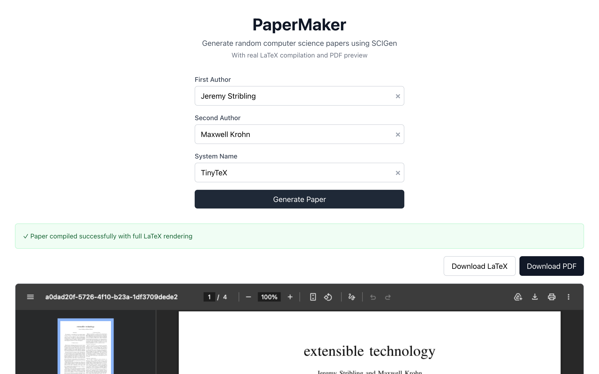

In 2005, three MIT grad students built SCIGen, a program that generated fake computer science papers using a context-free grammar. They submitted one of the generated papers to the World Multiconference on Systemics, Cybernetics and Informatics, and it was accepted for presentation. The paper was titled "Rooter: A Methodology for the Typical Unification of Access Points and Redundancy" and it meant nothing at all.

{kind=link}
Papermaker brings SCIGen to the browser. You click a button and get a complete, properly typeset CS research paper as a PDF. Title page, abstract, introduction, related work, methodology, results with figures, conclusion, references. The papers look real. They have the right structure, the right density of jargon, the right visual presentation. They just don't say anything.
Context-free grammars
A context-free grammar is a set of rules that expand symbols into other symbols or into actual text. You start with a root symbol like PAPER. One rule might expand PAPER into TITLE ABSTRACT BODY REFERENCES. Another might expand TITLE into VERB_PHRASE NOUN_PHRASE in NOUN_PHRASE. The rules keep firing until every symbol has been replaced by terminal strings: real words, LaTeX commands, punctuation.
SCIGen's grammar is very large. It has thousands of production rules, many with multiple alternatives that are chosen randomly at generation time. The grammar captures the structure of academic CS writing at a granular level. It knows that a results section should reference figures, that figures should have axes and legends, that the related work section should cite prior publications with author names and venue titles. Each generated paper is different because the random choices at each expansion point produce unique combinations.
What makes SCIGen effective (and disturbing) is that it captures the form of academic writing without any of the content. The generated sentences are grammatically correct and use domain-appropriate vocabulary. They reference each other internally. The figures are consistent with the text that describes them. If you skim the paper the way a busy reviewer might, it passes.
From Perl to Rust/WASM
The original SCIGen was written in Perl and output LaTeX source files to disk. Rather than porting the grammar engine to JavaScript, I rewrote it in Rust and compiled it to WebAssembly via wasm-pack. The ScigenGenerator struct holds the grammar rules as a hash map, a seeded RNG for reproducible output, and counters for numbered cross-references (so that \ref{fig3} actually points to figure 3). The recursive expansion runs in a Web Worker so the UI stays responsive while the grammar is being evaluated. Rust handles the deep call stacks and string manipulation involved in expanding thousands of nested rules better than JavaScript would.
The harder part is the LaTeX compilation. A generated paper isn't useful as raw LaTeX source. It needs to be compiled into a PDF with proper two-column layout, typeset mathematics, embedded figures, and consistent formatting. The browser generates the LaTeX source, sends it to a remote compilation service, and gets back a PDF.
Making the grammar produce compilable LaTeX was the most time-consuming part of the project. LaTeX is sensitive to syntax errors, and a context-free grammar that generates LaTeX has to ensure that every \begin has a matching \end, every { has a matching }, every \ref points to a \label that exists, and every citation key in the text corresponds to an entry in the bibliography. Many of the grammar rules had to be adjusted to maintain these invariants.
The figures
The generated figures are my favorite part of the output. Each paper includes charts with labeled axes, data series, error bars, and legends. The figures show things like the throughput of a fictional system compared to three fictional baselines, plotted over varying input sizes. The data is random but the presentation is perfect. If you look at the figure in isolation, without reading the paper, it looks like a real experimental result.
The grammar generates the TikZ or gnuplot code that produces these figures, and the LaTeX compilation renders them. Getting the figure code to compile reliably required a lot of testing, because the random generation occasionally produced degenerate cases (empty data series, axis ranges of zero) that caused LaTeX errors.